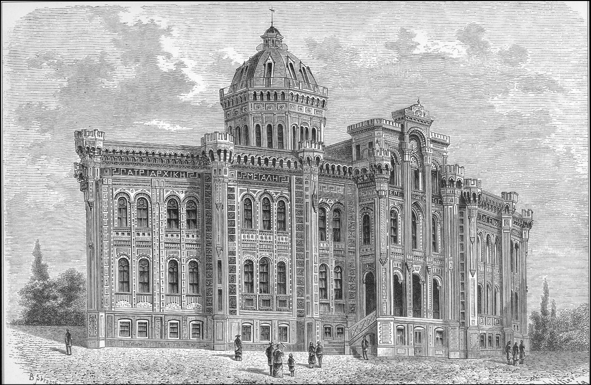

OSMANLI İMPARATORLUĞU’NDA YÖNETİM
Biz üç kıtada hüküm süren bir imparatorluktan söz ediyoruz. Ama bu imparatorluğun nasıl yönetildiği, bu yönetimin nasıl teşekkül ettiği, daha evvelki imparatorluklarla olan miras münasebeti maalesef çok ele alınmıyor. Okullardaki tarih kitaplarında Osmanlı tarihi bölümünde eyalet sistemi gayet kopuk, metne bağlanamamış, iyi yorumlanamamış biçimde talebenin ezberine sunuluyor.
Şunu söylemek gerekir ki Osmanlı idarî merkeziyetçiliği yani eyalet sistemi, taşra idaresi bütün büyük imparatorluklar gibi, yani tarihteki büyük Roma gibi, İran Sasanî İmparatorluğu gibi sağlam bir eyalet sistemine dayanır. Hatta Anadolu’da bu eyaletler bir ölçüde eski Roma eyaletlerinin sınır olarak da devamıdır. Bunda şaşılacak bir şey yoktur. Çünkü coğrafya belirli şartları, belirli zorunlulukları getirir. Onları durduk yerde değiştirmeye kalkmanın akılla ilgisi yoktur. İşleri birbirine karıştırırsınız. Yeni bir şehir teşkil etmek bir maceradır. Eski şehirler uzun bir tarih içinde hem coğrafya şartlarıyla, havayla suyla uyum sağlamış; hem ticaret yollarıyla münasebeti korumuş; hem de yakın beslenme kaynaklarını, ziraat yapılan kaynaklarını, su kaynaklarını mesafeye göre ayarlamışlarıdır. Binaenaleyh bütün bunları değiştirmeye kalkmak, bırakın ortaçağın zorluklarını, bugünün dünyasında bile bir çılgınlık sayılmalıdır.
Nitekim Selçuklu ve Osmanlı Türkiye’sinde Anadolu’da kurulmuş bazı şehirler vardır. Mesela Konya Karaman’nın Ermenek’i, Bursa civarındaki Yenişehir gibi; ama genellikle eski şehirler harap da olsalar Türkler Anadolu’ya girdiğinde yeniden diriltilmiş ve hayata devam etmişlerdir. Bunların çoğunun ismi de aynı kalmıştır. Telaffuz farklılığı vardır. Örneğin; “Eski Hisar” anlamında Paleokastron=Balıkesir veya Kengriyon=Çankırı veya Tripolis=Tirebolu veya Tefreke=Divriği gibi.
Hiç şüphesiz ki tamamen ismi değiştirilenler ve bir anlamda yeniden inşa edilenler vardır. İşte eski Türk şehri Muşkara. Bir tarihte Nevşehirli Damat İbrahim Paşa dediğimiz büyük sadrazamın gayretleriyle adeta yeniden inşa edilmiş ve Nevşehir halini almıştır. Bu gibi şehirlere “yeni şehir” demek kaçınılmazdır. Birtakım şehirlerimizin ise isimleri zamanla telaffuz değişikliğine uğramıştır: Trabzon (Trapezus) gibi, Giresun (Kerassus), Sinop (Sinope) gibi; bunları da anlamak lazım. Ordu gibi bazılarının ise tamamen yeni olduğunu söylemek mümkündür.
Şehir meselesi; toplayıcı, yönetici, üretimi planlayıcı yani üretimi dağıtıcı fonksiyona sahip bir şehir meselesi çok önemlidir. Osmanlı İmparatorluğu’nda da, Selçuklularda olduğu gibi bir idarî bölgenin merkezidir. Osmanlı bu idari bölgeye sancak tabir eder. Buraya tek tuğlu amblemi rütbe işareti olan bir sancak beyi tayin edilir. Birkaç sancağın birleşmesinden ise eyalet meydana gelir. Bu eyaletin en stratejik, en önemli sancağı ve şehri ise paşa sancağı tabir edilir. Buraya beylerbeyi rütbesi ile bir vezir gelir. Bu “mareşal”dır. Yani bugünkü Batı dillerinde ve bizde “mareşal” dediğimiz zattır. Gördüğünüz gibi 19. yüzyıla kadar idare, askerîdir. Beylerbeyi aslında idarenin ana unsuru değildir, koordinatörüdür. Tamamen askerîdir. Çünkü savaş zamanı her sancağın tımarlı sipahisi ve sancak askerinin başında gelen sancak beyleri, beylerbeyinin üç tuğu altında toplanır. Ve ordunun gelen kanadına ilhak eder. Yani Osmanlı ordusu garba veya şarka savaşa gidiyor olsun, yol boyunca çığ gibi büyüyen bir yapıya sahiptir. Demek ki eyaletin altında sancaklar vardır. Burada sancak beyi oturur. Sancak beyinin yanına onun idaresinde olmayan, müstakil bir sancak kadısı tayin edilir. Bunlar ekseri Mevleviyet dediğimiz üst rütbeyi almış kimselerdir. Bulunduğu şehrin hem yargıcı hem belediye başkanıdır. Malî ve idarî görevleri de vardır. Fakat bir şeriat adamı olduğu için bazen ahalinin de temsilcisi olarak merkeze onlar adına bazı konuları arz eder.
Mesela ahali pazar kurmak istiyor bir yerde, onu arz eder. Filanca yerin değiştirilmesini istiyor, arz eder. Bir yerde birisi birtakım bağışlarda bulunmuş bir vakıf kurmuş, o vakfın bütçeden muaf olmasını ve orada mesela pazar kurulmasını veya oranın uğrak yeri olmasını istiyor, bunu arz eder. Birtakım vakıfların kontrolünü yapar.
Böyle bir üçüncü şahıs da defterdardır; bugünkü adı da böyledir. Maliye Nezareti’nin eskiden eyalet ve sancaklardaki temsilcisidir. Bunlar beylerbeyinden ve sancak beylerinden bağımsız memurlardır. Çünkü yaptıkları işin öyle olması gerekir.
Soldan Sağa; Başvezir, Kaymakam, Reis Efendi, Divan Üyesi. H. Lalaisse.
Eyalet ve sancaklardan başka kazalar vardır. Merkezde kadı bulunur ve asayiş işleri de subaşılara bırakılır. Hallice köy arazileri de zaim dediğimiz zeamet sahiplerine verilir. Zeamet, tımar sistemi içinde geliri bolca olan bir yerdir. İlla yüz bin akça sınırı diye bir şart yok. Bazen altında da olabilir, bazen çok üstünde de olabilir. Ama her halükârda tımardan çok daha irice bir parçadır. Ve zaim olan kimse orduya birkaç nefer cebeli asker (atlı, techizatlı asker) götürmek zorundadır. Yanındaki bu genç askerler yararlılık gösterdikleri takdirde onlara da bir tımar beratı verilebilir. Yani bir köyün bir kısmı onların idaresine bırakılır. Bunlar maaş almazlar. Bunların maaşı o bulundukları yerin toplanan gelirleridir. Onu usulüne göre harcarlar. Yani köyün yapılacak yolu, kontrol edilecek çeşmesi varsa ona dikkat ederler. Bu iş için derbentçi diye vergiden muaf köylüler vardır mesela. Ayrıca kendisi de gelirine göre bir iki asker veya üç celebi ile savaşa katılır. Yıllık geliri 20 bin gümüş akçadan aşağı tımarlı pek yoktur. Ve bunlar bir köye müstakil olarak tasarruf etmezler. Bir köy cesametine ve gelirine göre iki veya üç tımarlı sipahi arasında taksim edilir.
Sancak valisi bir paşanın maiyet alayı. De l’Espinasse.
Bu demektir ki Batı’daki feodal sistemden farklı olarak, bir bölge, bir halk toptan bir feodal beyin emrine verilmez. Bu sistem burada bir farklılık gösterir. Bizim literatürümüzde Mübeccel Kıray’ın lord-bürokrat dediği bu adamlar evet bir nevi toprağı kontrol eden, yöneten bir sınıftır, fakat bunların istiklal kazanmalarını önleyecek mekanizmalar geliştirilmiştir. Aynı şekilde zaimler de bir köye, bir kasabaya tek başına hâkim olamazlar. Sancağın içinde de sancağın bütün yönetimi olduğu gibi bir sancak beyine bırakılmış değildir. Çünkü, mesela Konya vilayetinin –o zaman çok büyüktü– sancaklarından biri Niğde’dir, sancak beyi hassı da Nevşehir’dir. Mesela Niğde’nin bütün arazisinin sancak olarak bir sancak beyine bırakılması düşünülmez. Böyle bir şey yok.
Peki ne var? O sancakta mesela Ankara’ya bağlı Kırşehir sancak beyinin de arazisi vardır. Niğdelinin de arazisi Akşehir’de olabilir. Oraya voyvoda denen bir vekil tayin eder. Aynî vergileri onun adına voyvoda toplar. O onun için asker gönderir. Bunun gerekçesi çok açıktır. Bir tarafta yangın ve selle bir yıl bütün gelir yok olursa, öbür taraftan onu karşılayabilir ve hizmetini görebilir. Ama asıl önemlisi hiç kimse bir bölgenin tek başına beyi-lordu olamaz. Şark’ta çok eskiden beri tatbik edilegelen sistem bunu engeller.
Aynı şekilde mesela koskoca Kastamonu eyaletini alın; o zamanki Kastamonu bugünkü gibi değil. Yani çağdaş Bolu, çağdaş Zonguldak, Sinop sancağı zaten ortada yok, Bolu sancağı, Sinop sancağı ve Kengırı denen Çankırı sancağı hep bu eyalet içindedir. Ve şimdi zannetmeyin ki Kastamonu’da oturan beylerbeyinin bütün hasları o eyalettedir. Hayır Ankara’da da vardır. Hatta tetkik edilirse mesela Hüdavendigâr dediğimiz Bursa ve civarı sancaklarında da olduğu görülür. Bu ona yıllık gelir bakımından bir güvence sağladığı gibi, bir yerde tek kişinin kuvvetlenmesine de manidir. Kaldı ki sancak ve eyalet merkezindeki kaleler doğrudan merkeze bağlıdır. Burada kale dizdarı dediğimiz komutan yeniçeridir ve kale erleri bulunur. Bunlar ayaklanan bir sancak beyine veya beylerbeyine kalenin kapılarını kapatırlar. Kalenin içinde adamlar nasıl yaşıyor? İyi muhafaza ediyorlar mı orayı? Edepleri ile mi yaşıyorlar? Olmayacak yerdeki otları biçmeden mi bırakıyorlar? Cephanelikler kontrol ediliyor mu? Bu teftişi beylerbeyi değil, kadı yapar. Dolayısıyla her sancakta, her vilayet-eyalet merkezinde bir kale içinde yeniçeri garnizonu bulunur. Demokles’in kılıcı gibi durur öbürünün tepesinde. Onun ayaklanmasını önler. Yoksa merkezi sistemi başka türlü nasıl izah edebilirsiniz? İstanbul’dan bir ulak ferman ulaştırıyor. Ve fermanda paşanın katli emrediliyor. O da boynunu uzatıyor. Bu çok ayrı bir sistemdir.
Demek ki beylerbeyi ve sancakbeyi gibi Enderun’dan çıkma seçkin kişiler haslara sahipler. Bu haslar onlara görevleri boyunca ait. Oradan başka yere giderse veya azledilirse orada kalıyor. Kaydı hayat şartıyla verilmiyor. Ama zeamet ve tımarlar o yerin zaim ve sipahisine kaydı hayat şartı ile verilir. Ve şartları yerine getirirse, muharebeye giderse, ahlaksızlık ve yolsuzluk yüzünden azledilmezse burası çocuğuna da geçer. Burada bir ırsiyet de söz konusudur. Tabii bu timar beratları çok zor alınır. Ve bu arızî bir durum değildir. Adeta burnunu sürte sürte verirler ki, adam orada çok sağlam oturduğunu hissetmesin ve düşünmesin. İşte bu bir memuriyettir. Bu merkeziyetçi bir imparatorluktur.
Eyalet sistemimiz hiç şüphe yok ki memurların birbirleri üzerindeki bu karşılıklı kontrolü ve sert askerî hiyerarşi sayesinde kendini ayakta tutmuştur ve Doğu monarşilerinde Akdeniz imparatorluklarında görülen sistemler birbirlerine enteresan şekilde de benzer. Hepsinin temelinde kendisine verilen devlet emaneti çifti süren reaya yatar. İşte o vergi mükellefidir. Ve onun tespiti çok mühimdir. Bu, fetihten hemen sonra ortalık daha barut dumanı içindeyken yapılan tahrirle mümkündür. Ne yetişiyor orada, verim nedir, köyler ne kadardır, nüfusu nedir? Hepsi kaydedilir. Ondan sonra bunlar tımar ve dirlik olarak kime tevcih ediliyor veya vakıf olarak mı, emlak olarak mı eski sahiplerine bırakılıyor, deftere kaydedilir. İki; mufassal denen bir tahrir defterinde de oradaki nüfus vergiye müstehak, vergi vermekle yükümlü ve haklı olan sınıf sayılır. İşte bunlar bizim imparatorluğumuzun içtimaî tarihi için zengin ve vazgeçilmez belgelerdir.
Bu sistem nasıl değişmiştir? Hiç şüphesiz ki 18. yüzyılda merkezî ordular kurulmuştur. 19. yüzyılda teknoloji, ulaşım gelişmiştir. Merkezî orduların daimî surette beslenebilmesi için merkezî ve ehil işleyen bir malî sistem ve maliye bürokrasisi geliştirilecektir. Yeni vergiler konulacaktır. Dolayısıyla bu, taşra idaresine de aksedecektir. Eyaletin adı vilayet olur. Eyaletin başındaki beylerbeyi ve vezirpaşa yerine bir vali gelir. Bu vali sivil validir. Ama bir de ordu vardır ve ordunun başında müşir bulunur. İkisi birbirinin sahasına karışmaz. İkisinin arasında nasıl bir denge kurulacak? Kurulmuş dengeyi kaçıran yerler var mı, var. Bugüne kadar devam ediyor. Onun altındaki sancaklara mutasarrıflık denmiş. Liva başına bir mutasarrıf, sivil memur, onun altında kazalar. Kadı kalktığı için, devlet hayatımızdan çıkıp sadece mahkemeye kapandığı için, kazada bildiğimiz kaymakam, Mülkiye’den ve Hukuk Mektebi’nden yetişme kaymakam var. Bunların yanında sancaklarda vilayet merkezinde defterdar, kazada mal müdürü dediğimiz şahıs bulur ve sancak ve kazanın altında da sevilmeyen ve çok az sayıda olan nahiye denen bir birim vardır. 19. yüzyıl karışık bir idare yüzyılıdır. Köylerde Hıristiyan ve Müslüman karışık oturuyorsa, yönetiminden her dinden ikişer muhtar ve din görevlisi (papaz, imam) sorumludur. Bir de köy heyeti teşekkül ediyor. İlk örnek bugünkü Bulgaristan yani Tuna vilayetidir. Midhat ve Cevdet Paşa’nın kaleminden çıkan bir statüdür bu. 19. asrın modern taşra idaresini ve merkez bürokrasisini nizamnameler ve statü ile bu iki Osmanlı aydını kaleme almıştır. Tanzimat’ın akil idaresi yani Mustafa Reşid Paşa, Âli ve Fuat Paşaların idaresi sona erdikten sonra karışan her şey gibi birbirlerine düşman iki tip haline gelmişlerdir. Bu çok enteresan bir gelişmedir.
Türkiye eskinin üzerine dayalı yeni bir sistemle süratle yolunu almaktadır. Merkeziyetçi idare demiryoluyla, telgrafla ve maarif nezaretine bağlı okullarla gelişmekte, memur sayısı artmaktadır. Ve kocaman vilayetler yavaş yavaş bu merkezî kontrolün artması için kırpılmaktadır. İşte koca Ankara vilayetinden bir Yozgat, bir Kırşehir, bir Kayseri çıkmıştır. Koca Konya vilayetinden İçel çıkmıştır, Antalya’nın bir kısmı çıkmıştır. Hele son zamanda Beyşehir gibi, Ereğli gibi, Akşehir gibi yeni vilayetlerin çıkması söz konusudur. Niğde’den ayrılan Aksaray diye bir yer çıkmıştır. Aynı şekilde Koca Hüdavendigâr’dan Bursa, Kütahya, Bilecik ve Çanakkale çıkmıştır. Bunlar eski büyük eyaletlerin modern zamandaki şekillenmesi, biçimlenmesidir.
Osmanlı Devleti Rumeli’de 14. asırdan itibaren Lala Şahin Paşa’nın idaresinde sancak sistemini kurmuştur. Kısa zamanda eyaletler Macaristan’ın hemen hepsine, Podolya’ya yayılmıştır. Hatta Gürcistan, Azerbaycan gibi kısa süre fetihten sonra elde tutulan yerlerde de bu sistem görülmektedir. Ve çok enteresandır ki bu eski vilayetler yeni kurulan devletlerin menşei olmaktadır. Etnik, coğrafî, iktisadî bakımdan o derecede bir birlik vardır. Nerede bu sistem yürümemişse orada sorun çıkmıştır; Ortadoğu’da İngilizler ve Fransızlar eski Osmanlı eyalet taksimatını göze almayıp kendilerine göre cetvelle bir dünya yarattıkları için sorun devam etmektedir. Çünkü onlar suni çizgilerdir. Çizginin tarihî olanı, iktisadî olanı, asayiş bakımından işe yarayanı eski Osmanlı eyalet sistemidir. Bugünkü Türkiye’nin bu ananeye dikkat etmesi gerekir. Politikacıların lüzumsuz parçalanmalar ve farklı teşkilatlar öne sürerken dikkatli olmaları ve düşünmeleri gerekir. Aynı şekilde Türkiye’deki insanların da atalarının imparatorluğunun yönetim biçimini iyi tanımaları gerekmektedir.
OSMANLI’DA AZINLIKLAR VE MİLLET SİSTEMİ
Osmanlı İmparatorluğu’nda ve cemiyetinde millet dediğimiz zaman, tamamıyla kavramların üzerinde durmamız gerekiyor. Bu konularla ilgili noksanlığımız olduğu içindir ki siyasi hayatımıza kadar akseden yanlış yorumlarla dolu bir kavganın içine giriyoruz.
Millet Arapça bir sözdür. Fakat bu Arapça söz bütün Arapça önemli kavramlar ve terimler gibi yöntem olarak İbranca’da hatta Aramca’da ve bazı ahvalde de “Politikon” deyiminde olduğu gibi Yunanca’da aranmalıdır. Çünkü cihanşümul bir felsefe ve siyaset dili olan Arapça’nın kökleri semilingual kardeşler olan İbranca ve Aramca’dır. Ve ortaçağdaki kültürel saçaklaşma dediğimiz kavram dolayısıyla da Yunanca’dadır. Binaenaleyh bu üç medeniyet dairesine bakmayan bir İslam tetkikinin, bir Arabistik tetkikin hiçbir anlamı yoktur.
Millet Arapça’dan evvel İbranca bir kelimedir ve Aramca’dan gelir. “Söz” demektir. Burada bir metafor söz konusudur. Söz, kelamın ta kendisidir. Yani logos’tur ve Allah’ın sözü etrafında toplanan bir komünoteyi, bir cemaati, bir inançlılar kitlesini, bir inancı ifade etmektedir. Onun için bizim anladığımız millet budur. Fakat bizim kullandığımız, Türkiye Cumhuriyeti’nde kullandığımız bir millet vardır. Bu “millet” 19. asırdaki birçok Osmanlıca kelime gibi Türklerin yarattığı kavramlardandır ve doğrudan doğruya ‘nation’un tercümesidir. Nation Latince bir kelimedir. Bunun geldiği kaynak, “etnos”tur, Yunanca’dır. Dolayısıyla biz “etnos”la alakası olmayan “millet”i “etnos”a çevirmişiz ve bu şekilde kullanmaktayız.
Balıklı Rum Ortodoks Kilisesi. Thomas Allom. 72: Fenerbahçe’de Büyük Patrikhane. B. Sprassberger.
Bugün millet sistemine artık avdet etmemiz mümkün değildir. Bazı emperyal müesseseler vardır ki onun için sadece emperyal ideoloji değil bir imparatorluk tarzı gerekir. Nasıl ki Bizanslı ile modern Yunanlı da aynı insan değildir ve modern Yunanlı, Bizans’ın ideolojisini hiçbir zaman anlayamaz.
Bizans kelimesi bu imparatorlukta yaşayan eski insanlar için hiçbir şey ifade etmez. Çünkü onlar Romalıdır, Rum’dur. Bizans kelimesi bir ideolojik buluntudur. Doğrudan doğruya mukaddes Roma-Germen İmparatorluğu’na imparatorluk vasfını vermek için buradaki hakiki imparatorluğu bertaraf etmek amacını taşır. Bu çok enteresan bir yaklaşımdır ve burada bulunan Türklerin ataları, Müslümanların ataları da Türk lafını bilmelerine ve zaman zaman kullanmalarına rağmen, resmî olarak Rum kelimesini kendileri için de kullanmışlardır, bunu biliyoruz. Çünkü biz Roma İmparatorluğu’nun vârisleriyiz; Müslüman da olsak Romalıyız ve Roma İmparatorluğu olduğumuz için de kilisenin protektorası bize kaldığında, işler bir uyum halinde devam etmiştir, yani imparatorluk devam etmiştir ve o imparatorluğun içinde baştaki imparator bir Müslüman olmasına ve herhalde inancı bakımından pek tercih edilmemesine rağmen kilise onu benimsemiştir. Bu bir Roma İmparatorluğu’dur ve bunun içindeki sistem de ona göre gelişmiştir. Türklerin imparatorluğu, Müslümanların imparatorluğudur haliyle, ama bu bir Roma’dır. Roma’yı burada anlamak çok güçtür. Maalesef bugünkü tarih anlayışımız ve popüler anlayışımız itibariyle biz Roma İmparatorluğu’nun ne olduğunu anlamıyoruz. Roma İmparatorluğu sırf Hıristiyan demek değildir. Hıristiyan olduğu zaman da vardır, pagan olduğu zaman da vardır, ama Müslüman olduğu zaman da vardır.
Romalılıkta bir millî dilin, belirli bir etnos’un hâkim olduğu zamanlar vardır. Ama her şeye rağmen öbür diller de bunun yanında yaşar. Hiç şüphesiz bu imparatorluklarda askerî dil her zaman tektir. Birinci Roma’da ordu, ister Mezopotamya sınırlarında, ister uzak ve soğuk Germanya’nın sınırlarında bulunsun, her zaman Latince kullanmıştır. İkinci Roma zamanında ordu ister Mısır’da bulunsun, ister Balkanlar’da ve Herson bölgesinde bulunsun Helence konuşur. Üçüncü Roma olan Osmanlı zamanında ordu isterse Tuna kıyılarında, isterse Fırat, Dicle kıyılarında, ister Habeşistan sınırlarında olsun Türkçe konuşur. Çünkü askerî dil, komando dili çok önemlidir. Bunun gibi bürokraside de tek dil kullanılır, ama öbür dillere de yer vardır. İçtimaî hayata geçtiğiniz zaman diller ve dinler çok çeşitlidir. Bu cemaatlerin içinde çeşitli inanç sahiplerinin kompartımanlar halinde yaşaması çok olağan karşılanmalıdır. Zaten o kompartımanlara mensup olanlar da dinî inançlarının dışında başka bir hayat tarzı düşünmezler. Bu imparatorluklarda bir dinden bir dine geçiş hoş karşılanmaz. Yani bizden evvelki Roma İmparatorluğu’nda hâkim olan din Hıristiyanlıktır. O devirde birilerinin Hıristiyan olması tabii çok hoştur. Bizim zamanımızda birilerinin Müslüman olması, hidayete ermektir, tabii devlet için çok hoştur. Ama meselâ bir Yahudi’nin Hıristiyan olması hoş karşılanmaz, hatta Hıristiyanlığın içinde mezhep geçişleri bile hoş karşılanmaz. Ta ki 19. asra geldiğimiz zaman böyle vakalar tabii olmuştur ve gittikçe yayılmıştır. Bunun üzerinde durmak gerekir.

Fener’de Büyük Lise.
Böyle bir imparatorluğun içinde hiç şüphesiz ki millet bir birliği ifade eder ve millet teşkilatının başı olan ruhani lidere verilen ad, Yunanca ethnos ve arhon kelimelerinin birleşmesiyle meydana gelmiştir: etnarh, yani milletbaşı. Bu kişi, sadece ruhanî lider değil, idarî, hukukî işlere bakan, hatta okul işlerine bakan kimsedir. Çok enteresan bir gelişme, Batı takvimine göre 1453 yılının kış aylarında ve ardından 1454’ün Noel’inde, Patrik Ghennadios Fatih Sultan Mehmed tarafından davet edilmiştir ve bu davetin tasvirini ilk defa Babinger çizmiştir.
Babinger’in ne Türkler ne de Ortodoks kilisesi için hususi bir sempati duymasına gerek var, yani o konumda biri değil biliyorsunuz, Bavyeralı bir Osmanist’tir, Osmanlı tarihçisidir. Bu töreni çok orijinal olarak anlatır; Patrik âsasını hükümdardan almıştır ve Fatih Sultan Mehmed vezirlerle ve başka devlet ricâliyle yemek âdetini kaldırdığı, ref ettiği halde, Patrik’le birlikte öğlen yemeğini yemiştir. Yemekten sonra dönüşte bütün vezirler Patrik’e refakat etmektedir. Kendisine kır atlar hediye edilmiştir. Bu kır atlar çok önemli bir hâkimiyet sembolüdür ve Patrik kır ata binerek bir milletin başı, hem de aşağı yukarı bir ortak milletin başı olarak Patrikhane’ye avdet etmektedir. Avdet ettiği yer hiç şüphesiz bugünkü Patrikhane değildir. Çünkü oraya 16. asır sonunda gelinmiştir. O sırada Patrikhane henüz şehrin ortasındadır. Tahminen bugünkü Fatih Camii civarındadır ve Palaiologoslar (Paleologlar) devrinden beri ilk defa olarak kendisine bütün Ortodoks inançtaki milletlerin, sadece ruhanî liderliği değil idarî, malî, adlî liderliği ve maarif otoritesi olma görevi yüklenmektedir. Bu Tanzimat’a kadar böyle devam edecektir. Çok önemli bir husustur: Bu dünyada bu mezhebin dışında kalan, Antikalkedon dediğimiz kiliselerin birliğini temsilen bir Ermeni Patriki vardır ve bu makam elan devam etmektedir bu yapı ve Ermeni Patriği İstanbul’a tayin edilmektedir. İstanbul’da Ermenilerin ruhanî bir makamı yoktur; burada Eçmiyadzin, Sis, Ahdamar ve Kudüs’teki patriklik gibi bir makam yoktur. Kendisine denmiştir ki: “Sen artık millet başısın”, yani Etnarh’sın. Bu tamamıyla Roma sistemidir. Ruhanî liderin kim olduğu mühim değildir. Eçmiyadzin’deki katolikos bile size tâbidir. Vergisini size verir ve sizin jürisdiksiyonunuza, cezaî takibatınıza tâbidir. Bunun dışında aranızda nasıl bir ruhanî ilişki olduğu bizim sorunumuz değildir. Bu böyle de devam etmektedir.
451 Kadıköy Konsili’nin kararlarına iştirak etmeyen kiliselere “Antikhalkedon”, yani Kadıköy karşıtı kiliseler denir ve bu iki grup yani Mısır’ın Kobt [Kıbtî] Kilisesi, Süryani Kadim Kilisesi ve Ermeniler, bir ara imparatorlukta aynı idareye tâbi tutulmuşlardır. Gayriresmî olarak ayrı malî hükümlere ve idarî teşkilata sahip olsalar da, idare bunları bir ölçüde tutmuştur. Ta ki 19. asra gelene kadar…
Nihayet bu imparatorlukta çok önemli bir özellik, önemli bir Yahudi nüfusu vardır. Bunlar burada eskiden beri yaşayan ve Romaniyot denilen, Bizans’tan kalanlar, artı Ortadoğu bölgesinde yaşayanlar, fakat büyük ölçüde İspanya ve Portekiz’den İtalya yoluyla göç edenlerdir. 19. asra doğru bunlara “Aşkenazi” dediğimiz –Almanyalı Yahudiler demektir– Yiddiş konuşan bir grup da katılacaktır. Ve bunu biz pek bilmiyoruz. Kültürel hayatımızda 19. asrın Osmanlı Yahudiliği içinde bir klasik Akdeniz kültürünü saklayan ve çoğunluğu teşkil eden İspanya, İtalya, Portekiz kökenliler vardı. Ayrıca, metropolde pek görülmeyen Arapçayı ve Ortadoğu kültürünü muhafaza eden Yahudiler vardır. Fakat asıl önemlisi ta 17., 18., 19. yüzyıllarda Doğu Avrupa’dan kaçıp Osmanlı ülkelerine sığınan ve Yiddiş dilinde konuşanlar vardır. Bu bizi yapı olarak tamamlamaktadır.
Şimdi 19. asırla birlikte, insanlar çok değişik bir yapının içine giriyorlar. Bizim 19. asırdaki reformlarımız, hem reformdur hem değildir. Reformdur, çünkü bu yapı değişmektedir. Değildir, çünkü çok eskiden kalma âdetler devam etmektedir.
Gayrimüslimlerin askerlik yapmaması meselesi bizim tarih edebiyatımızda ve yanlış tarih bilgimiz dolayısıyla siyasî edebiyatımızda son derecede yanlış olarak bilinen ve yorumlanan bir olaydır. Gayrimüslimler askerlik yaparlar. Hem sadece öyle tabip, eczacı, mühendis olarak değil, bayağı muharib sınıfların içinde de bulunurlar. Sırf subay olarak değil, nefer olarak da yaparlar. O kadar ki Osmanlı donanması Noel’de ve Paskalya’da demir atar, çünkü mürettebatın çok önemli bir kısmı yortu için evine gitmek zorundadır. Bu durumu ve uygulamayı sadece o zaman hekim Aleksandrios veya kimyager Polikarpos’la veya eczacı Dadyan Efendi’yle sınırlayamazsınız. Mürettebatın içinde, ayrıca orduda önemli miktarda gayrimüslim vardır.
Askerî mekteplerde okuyanlar da vardır. Birinci Cihan Harbi’nde zaten gayrimüslimler de askere alınmıştır ama bunları maalesef imparatorluğumuzun who’s who’su, yani “kim kimdir”i iyi hazırlanmadığı için bilmiyoruz. Düzgün bir nüfus sayılmadığı ve imparatorluğun üçte bir nüfusu gayrimüslim addedildiği için, önemli okullarımıza bu oranlarda tabip alınır, veteriner alınır. Mekteb-i Mülkiye’ye, idareci yetiştiren mektebe talebe alınır. Hıristiyan cemaatler arasında çekişme olur. Mesela Ermeniler, “Rumları fazla alıyorsunuz, biz daha çok olmalıyız” gibi itirazlarda bulunurlar. Zaman zaman düzenlemeler yapılır zaman zaman. Ama her zaman için numerus clausus esası üzerinden, gayrimüslimlerden üçte bir oranında talebe alınır.
Daha da ilginci, Osmanlı padişahı son Roma imparatorudur. Selamlık resmine, Cuma selamlığına çıktığı zaman selam kıtasının içinde gayrimüslim milletlerden subay ve çavuşların bulunmasına dikkat edilir. O kadar ki 19. asırda Ermeni Katolikler ve Latin milleti dediğimiz, Roma Katolik Kilisesi’ne mensup kişiler, “Bizden de çavuş ve mülazım (teğmen) bulunsun” demişler, bu da kabul edilmiştir.
Bu toplumda insanların, modern bir toplumda olduğu gibi, standart görevler ve uniform dediğimiz ortak yeknesak mevkiler için kavga etmeleri söz konusu değildir. Herkes kendi kompartımanı içinde kavga eder. Ermeni kendi sınıfı içinde, “amira” dediğimiz yüksek zümrenin insanlarıyla çekişir. Onların yerini almak için uğraşır. Musevi aynı şekilde kendi kompartımanı içinde kendininkilerle çekişir. Rum Ortodoks nüfus için de bu böyledir. 19. asrın etnik milliyetçiliği dolayısıyla bir müddet sonra Makedonlar, Bulgarlar Hellen unsurla çekişmeye başlamışlardır. Mesela Bulgaristan tarihinde 19. yüzyılda, bilhassa maarif reformları sırasında, Bulgarların, Bulgar halkının asıl çekiştiği unsur Bâbıâli’nin Türk Müslüman memurlarından çok, Fener Rum Patrikhanesi’nin mensupları ve temsilcileri olmuştur.
Din bir kültürdür, dinî inancın etrafında bir kültür hâsıl olur ve insanlar bunu kaybettikleri zaman, velev ki lisanlarını korusalar bile, artık yaşam biçimlerinde ve hayata bakışta değişiklik meydana gelir. Mühim olan Ortodoksluk veya Protestanlık meselesi değil. Biz burada din tartışmıyoruz. Ama biz kültür tartışıyoruz. Dolayısıyla Protestanlık bu ülkelerin kültürünü tahrip ediyor, dedik. Bu tabii tasvip gördü ve bunun üzerinde durmak gerekiyor.
19. yüzyılda Osmanlı coğrafyasında Protestan faaliyetlerin neleri tahrip ettiğini anlamak için pekâlâ günümüze bakabiliriz. Bizim klasik millet sistemini altüst eden gelişmelerden biri de bu olmuştur. Milletler, yani eski inanç grupları yeni gelişmeyle karşı karşıyadır ve bunun yarattığı çatışmalar, gerilimler Rum Ortodoks Kilisesi’ni de, Ermeni Kadim Kilisesi’ni de, Süryanileri de etkisi altına almaktadır. Nihayet 19. yüzyılda çok daha önemli bir olay, mezhep değiştirme işlemleri de artmaktadır. Daha evvel millet statüsüne sahip olmayan Latin milleti, bir millet statüsüne sahip olmaktadır, çünkü bir hayli İtalyan vardır. Yani İtalya’da ekmeğini sağlayamayan birtakım insanlar buraya gelmişler, iyi de etmişlerdir. En azından Beyoğlu mimarisini onlara borçluyuz. Bu mimarî sanatını onlar öğretmişlerdir. O dönemde İtalyanca çok yaygın bir biçimde konuşulan bir dildi. Gerçi bizim bildiğimiz İtalyanca değildi.
Daha da ilginci Yukarı Mezopotamya’dan göç eden Süryani ve Keldani dediğimiz, inanç sahiplerinin bilhassa Katolik olanları bu cemaate ilhak ettiği için onlar da tabii yerel dillerini bırakıyorlar. Böyle Türkiye’de Türkçe konuşan bir Katolik cemaat ortaya çıktı, bu enteresan bir gelişmedir. Yani din bazılarımızın zannettiği gibi hayatımızdan çekilip gitmiş değildir. Mühim bir kültürel olay ve değişim olarak el’an devam etmektedir.
Şunun üzerinde ısrarla durmak gerekmektedir. Osmanlı bir imparatorluktu, bunun klasik millet yapısı 19. yüzyılda darbeler yedi. Bu darbeleri yerken kendine has yeni mekanizmalar geliştirdi ve bu siyasî imparatorluk yapısıyla birlikte birçok şey tarihe karıştı, ama birçokları da karışmadı. Biz bu sistemi son derece akıllıca etüt etmeliyiz. Etmeliyiz ki zamanımızı iyi değerlendirelim ve hatta bazı problemler için bazı çözüm yolları bilelim. Hiçbir içtimaî teşekkül, yani toplum ve hiçbir siyasî teşekkül, yani devlet, tarihi reddetme ve görmezlikten gelme hakkına sahip değildir. Bunu yaptığı takdirde ortaya çıkan gelişmeler hakikaten o toplumu şaşırtır ve maalesef istenmeyen etkilerin de karışmasıyla kaosun içine itebilir; hoşlanmayacağımız gelişmelerden mutazarrır olabiliriz. Burada tavsiye edilecek şey ilmî gayret ve ilahî bir hikmettir. O inşallah herkese yardımcı olabilir.